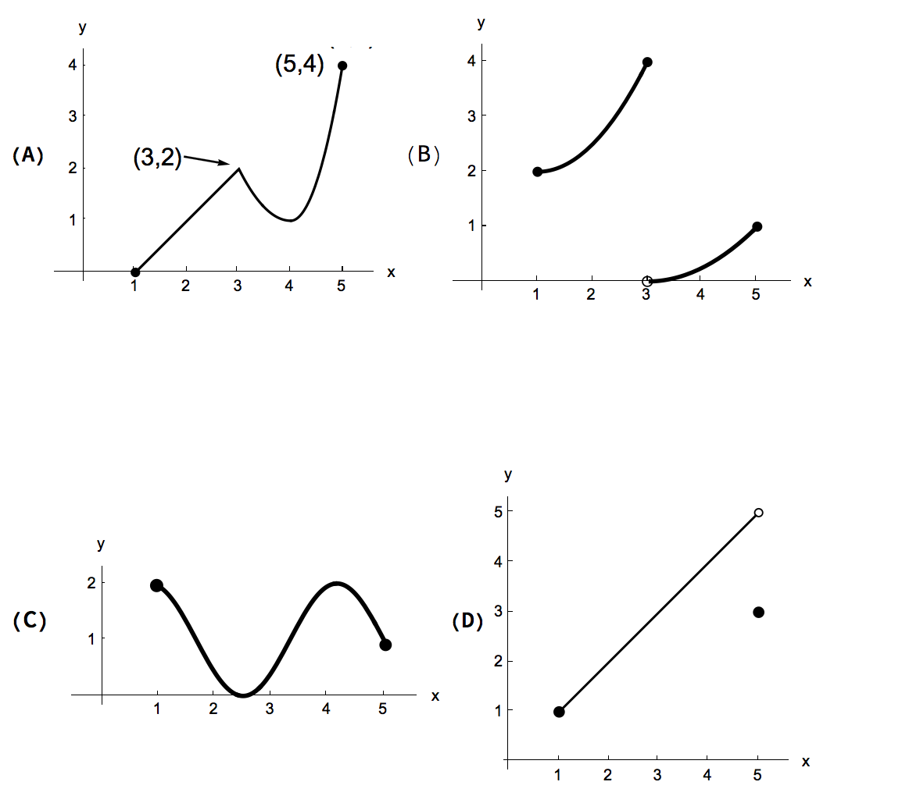

Given the four functions on the interval \([1, 5]\), answer the questions below.

- (a)
- List the functions that satisfy the hypothesis of the Extreme Value Theorem on \([1,5]\).
- (b)
- For each of the functions, determine if they have a global maximum, a global minimum, both, or neither.
- (c)
- List the functions that satisfy the hypothesis of the Mean Value Theorem on \([1, 5]\).
- (d)
- List the function (or functions) for which there exists a point \(c\) in \((1, 5)\) such
that \[ f'(c) = \frac {f(5) - f(1)}{5 - 1} \]